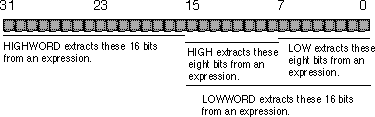

|
Table of Content | Chapter Eight (Part 6) |
|
Table of Content | Chapter Eight (Part 6) |
| CHAPTER EIGHT: MASM: DIRECTIVES & PSEUDO-OPCODES (Part 5) |
| 8.12.4 -
Type Operators 8.12.5 - Operator Precedence |
The "xxxx ptr" coercion
operator is an example of a type operator. MASM expressions possess two major attributes:
a value and a type. The arithmetic, logical, and relational operators change an
expression's value. The type operators change its type. The previous section demonstrated
how the ptr operator could change an expression's type. There are several
additional type operators as well.
| Operator | Syntax | Description |
|---|---|---|
| PTR | byte ptr expr word ptr expr dword ptr expr qword ptr expr tbyte ptr expr near ptr expr far ptr expr |
Coerce expr to point at a byte. Coerce expr to point at a word. Coerce expr to point at a dword. Coerce expr to point at a qword. Coerce expr to point at a tbyte. Coerce expr to a near value. Coerce expr to a far value. |
| short | short expr | expr must be within ±128 bytes of the current jmp instruction (typically a JMP instruction). This operator forces the JMP instruction to be two bytes long (if possible). |
| this | this type | Returns an expression of the specified type whose value is the current location counter. |
| seg | seg label | Returns the segment address portion of label. |
| offset | offset label | Returns the offset address portion of label. |
| .type | type label | Returns a byte that indicates whether this symbol is a variable, statement label, or structure name. Superceded by opattr. |
| opattr | opattr label | Returns a 16 bit value that gives information about label. |
| length | length variable | Returns the number of array elements for a single dimension array. If a multi-dimension array, this operator returns the number of elements for the first dimension. |
| lengthof | lengthof variable | Returns the number of items in array variable. |
| type | type symbol | Returns a expression whose type is the same as symbol and whose value is the size, in bytes, for the specified symbol. |
| size | size variable | Returns the number of bytes allocated for single dimension array variable. Useless for multi-dimension arrays. Superceded by sizeof. |
| sizeof | sizeof variable | Returns the size, in bytes, of array variable. |
| low | low expr | Returns the L.O. byte of expr. |
| lowword | lowword expr | Returns the L.O. word of expr. |
| high | high expr | Returns the H.O. byte of expr. |
| highword | highword expr | Returns the H.O. word of expr. |
The short operator works exclusively with the jmp
instruction. Remember, there are two jmp direct near instructions, one
that has a range of 128 bytes around the jmp, one that has a range of 32,768
bytes around the current instruction. MASM will automatically generate a short jump if the
target address is up to 128 bytes before the current instruction. This operator is mainly
present for compatibility with old MASM (pre-6.0) code.
The this operator forms an expression with the
specified type whose value is the current location counter. The instruction mov bx,
this word, for example, will load the bx register with the value
8B1Eh, the opcode for mov bx, memory. The address this word is
the address of the opcode for this very instruction! You mostly use the this operator
with the equ directive to give a symbol some type other than constant. For
example, consider the following statement:
HERE equ this near
This statement assigns the current location counter value
to HERE and sets the type of HERE to near. This, of course,
could have been done much easier by simply placing the label HERE: on the
line by itself. However, the this operator with the equ
directive does have some useful applications, consider the following:
WArray equ this word BArray byte 200 dup (?)
In this example the symbol BArray is of type
byte. Therefore, instructions accessing BArray must contain byte operands
throughout. MASM would flag a mov ax, BArray+8 instruction as an error.
However, using the symbol WArray lets you access the same exact memory
locations (since WArray has the value of the location counter immediately
before encountering the byte pseudo-opcode) so mov ax,WArray+8
accesses location BArray+8. Note that the following two instructions are
identical:
mov ax, word ptr BArray+8
mov ax, WArray+8
The seg operator does two things. First, it
extracts the segment portion of the specified address, second, it converts the type of the
specified expression from address to constant. An instruction of the form mov ax,
seg symbol always loads the accumulator with the constant corresponding to the
segment portion of the address of symbol. If the symbol is the name of a
segment, MASM will automatically substitute the paragraph address of the segment for the
name. However, it is perfectly legal to use the seg operator as well. The
following two statements are identical if dseg is the name of a segment:
mov ax, dseg
mov ax, seg dseg
Offset works like seg, except it
returns the offset portion of the specified expression rather than the segment portion. If
VAR1 is a word variable, mov ax, VAR1 will always load the two
bytes at the address specified by VAR1 into the ax register. The
mov ax, offset VAR1 instruction, on the other hand, loads the offset (address) of VAR1
into the ax register. Note that you can use the lea instruction
or the mov instruction with the offset operator to load the
address of a scalar variable into a 16 bit register. The following two instructions both
load bx with the address of variable J:
mov bx, offset J
lea bx, J
The lea instruction is more flexible since you
can specify any memory addressing mode, the offset operator only allows a
single symbol (i.e., displacement only addressing). Most programmers use the mov
form for scalar variables and the lea instructor for other addressing modes.
This is because the mov instruction was faster on earlier processors.
One very common use for the seg and offset
operators is to initialize a segment and pointer register with the segmented address of
some object. For example, to load es:di with the address of SomeVar, you
could use the following code:
mov di, seg SomeVar
mov es, di
mov di, offset SomeVar
Since you cannot load a constant directly into a segment
register, the code above copies the segment portion of the address into di
and then copies di into es before copying the offset into di.
This code uses the di register to copy the segment portion of the address
into es so that it will affect as few other registers as possible.
Opattr returns a 16 bit value providing
specific information about the expression that follows it. The .type operator
is an older version of opattr that returns the L.O. eight bits of this value.
Each bit in the value of these operators has the following meaning:
| Bit(s) | Meaning |
|---|---|
| 0 | References a label in the code segment if set. |
| 1 | References a memory variable or relocatable data object if set. |
| 2 | Is an immediate (absolute/constant) value if set. |
| 3 | Uses direct memory addressing if set. |
| 4 | Is a register name, if set. |
| 5 | References no undefined symbols and there is no error, if set. |
| 6 | Is an SS: relative reference, if set. |
| 7 | References an external name. |
| 8-10 | 000 - no language type 001 - C/C++ language type 010 - SYSCALL language type 011 - STDCALL language type 100 - Pascal language type 101 - FORTRAN language type 110 - BASIC language type |
The language bits are for programmers writing code that interfaces with high level languages like C++ or Pascal. Such programs use the simplified segment directives and MASM's HLL features.
You would normally use these values with MASM's conditional assembly directives and macros. This allows you to generate different instruction sequences depending on the type of a macro parameter or the current assembly configuration. For more details, see "Conditional Assembly" and "Macros".
The size, sizeof, length,
and lengthof operators compute the sizes of variables (including arrays) and
return that size and their value. You shouldn't normally use size and length.
The sizeof and lengthof operators have superceded these
operators. Size and length do not always return reasonable
values for arbitrary operands. MASM 6.x includes them to remain compatible with older
versions of the assembler. However, you will see an example later in this chapter where
you can use these operators.
The sizeof variable operator returns the
number of bytes directly allocated to the specified variable. The following examples
illustrate the point:
a1 byte ? ;SIZEOF(a1) = 1 a2 word ? ;SIZEOF(a2) = 2 a4 dword ? ;SIZEOF(a4) = 4 a8 real8 ? ;SIZEOF(a8) = 8 ary0 byte 10 dup (0) ;SIZEOF(ary0) = 10 ary1 word 10 dup (10 dup (0)) ;SIZEOF(ary1) = 200
You can also use the sizeof operator to
compute the size, in bytes, of a structure or other data type. This is very useful for
computing an index into an array using the formula from Chapter Four:
Element_Address := base_address + index*Element_Size
You may obtain the element size of an array or structure
using the sizeof operator. So if you have an array of structures, you can
compute an index into the array as follows:
.286 ;Allow 80286 instructions.
s struct
<some number of fields>
s ends
.
.
.
array s 16 dup ({}) ;An array of 16 "s" elements
.
.
.
imul bx, I, sizeof s ;Compute BX := I * elementsize
mov al, array[bx].fieldname
You can also apply the sizeof operator to
other data types to obtain their size in bytes. For example, sizeof byte
returns 1, sizeof word returns two, and sizeof dword returns 4.
Of course, applying this operator to MASM's built-in data types is questionable since the
size of those objects is fixed. However, if you create your own data types using typedef,
it makes perfect sense to compute the size of the object using the sizeof
operator:
integer typedef word
Array integer 16 dup (?)
.
.
.
imul bx, bx, sizeof integer
.
.
.
In the code above, sizeof integer would return
two, just like sizeof word. However, if you change the typedef
statement so that integer is a dword rather than a word,
the sizeof integer operand would automatically change its value to four to
reflect the new size of an integer.
The lengthof operator returns the total number
of elements in an array. For the Array variable above, lengthof Array
would return 16. If you have a two dimensional array, lengthof returns the
total number of elements in that array.
When you use the lengthof and sizeof
operators with arrays, you must keep in mind that it is possible for you to declare arrays
in ways that MASM can misinterpret. For example, the following statements all declare
arrays containing eight words:
A1 word 8 dup (?)
A2 word 1, 2, 3, 4, 5, 6, 7, 8
; Note: the "\" is a "line continuation" symbol. It tells MASM to append
; the next line to the end of the current line.
A3 word 1, 2, 3, 4, \
5, 6, 7, 8
A4 word 1, 2, 3, 4
word 5, 6, 7, 8
Applying the sizeof and lengthof
operators to A1, A2, and A3 produces sixteen
(sizeof) and eight (lengthof). However, sizeof(A4) produces eight and
lengthof(A4) produces four. This happens because MASM thinks that the arrays begin
and end with a single data declaration. Although the A4 declaration sets
aside eight consecutive words, just like the other three declarations above, MASM thinks
that the two word directives declare two separate arrays rather than a single array. So if
you want to initialize the elements of a large array or a multidimensional array and you
also want to be able to apply the lengthof and sizeof operators
to that array, you should use A3's form of declaration rather than A4's.
The type operator returns a constant that is
the number of bytes of the specified operand. For example, type(word) returns
the value two. This revelation, by itself, isn't particularly interesting since the size
and sizeof operators also return this value. However, when you use the type
operator with the comparison operators (eq, ne, le, lt, gt, and ge), the comparison
produces a true result only if the types of the operands are the same. Consider the
following definitions:
Integer typedef word
J word ?
K sword ?
L integer ?
M word ?
byte type (J) eq word ;value = 0FFh
byte type (J) eq sword ;value = 0
byte type (J) eq type (L) ;value = 0FFh
byte type (J) eq type (M) ;value = 0FFh
byte type (L) eq integer ;value = 0FFh
byte type (K) eq dword ;value = 0
Since the code above typedef'd Integer
to word, MASM treats integers and words as the same type. Note that with the
exception of the last example above, the value on either side of the eq
operator is two. Therefore, when using the comparison operations with the type
operator, MASM compares more than just the value. Therefore, type and sizeof
are not synonymous. E.g.,
byte type (J) eq type (K) ;value = 0
byte (sizeof J) equ (sizeof K) ;value = 0FFh
The type operator is especially useful when
using MASM's conditional assembly directives. See "Conditional Assembly" for
more details.
The examples above also demonstrate another interesting
MASM feature. If you use a type name within an expression, MASM treats it as though you'd
entered "type(name)" where name is a symbol of the given type. In
particular, specifying a type name returns the size, in bytes, of an object of that type.
Consider the following examples:
Integer typedef word
s struct
d dword ?
w word ?
b byte ?
s ends
byte word ;value = 2
byte sword ;value = 2
byte byte ;value = 1
byte dword ;value = 4
byte s ;value = 7
byte word eq word ;value = 0FFh
byte word eq sword ;value = 0
byte b eq dword ;value = 0
byte s eq byte ;value = 0
byte word eq Integer ;value = 0FFh
The high and low operators, like offset
and seg, change the type of expression from whatever it was to a constant.
These operators also affect the value of the expression - they decompose it into a high
order byte and a low order byte. The high operator extracts bits eight
through fifteen of the expression, the low operator extracts and returns bits
zero through seven. Highword and lowword extract the H.O. and
L.O. 16 bits of an expression:

You can extract bits 16-23 and 24-31 using expressions of
the form low( highword( expr )) and high( highword(
expr )), respectively.
Although you will rarely need to use a complex address expression employing more than two operands and a single operator, the need does arise on occasion. MASM supports a simple operator precedence convention based on the following rules:
| Precedence | Operators |
|---|---|
| (Highest) | |
| 1 | length, lengthof, size, sizeof, ( ), [ ], < > |
| 2 | . (structure field name operator) |
| 3 | CS: DS: ES: FS: GS: SS: (Segment override prefixes) |
| 4 | ptr offset set type opattr this |
| 5 | high, low, highword, lowword |
| 6 | + - (unary) |
| 7 | * / mod shl shr |
| 8 | + - (binary) |
| 9 | eq ne lt le gt ge |
| 10 | not |
| 11 | and |
| 12 | or xor |
| 13 | short .type |
| (Lowest) |
Parentheses should only surround expressions. Some
operators, like sizeof and lengthof, require type names, not
expressions. They do not allow you to put parentheses around the name. Therefore, "(sizeof
X)" is legal, but "sizeof(X)" is not. Keep this in mind
when using parentheses to override operator precedence in an expression. If MASM generates
an error, you may need to rearrange the parentheses in your expression.
As is true for expressions in a high level language, it is a good idea to always use parentheses to explicitly state the precedence in all complex address expressions (complex meaning that the expression has more than one operator). This generally makes the expression more readable and helps avoid precedence related bugs.
|
Table of Content | Chapter Eight (Part 6) |
Chapter Eight: MASM: Directives &
Pseudo-Opcodes (Part 5)
26 SEP 1996